← All work
Concept
Modern Tiny House Eco-Village
An interior-architecture study for a small, low-impact living community.
Concept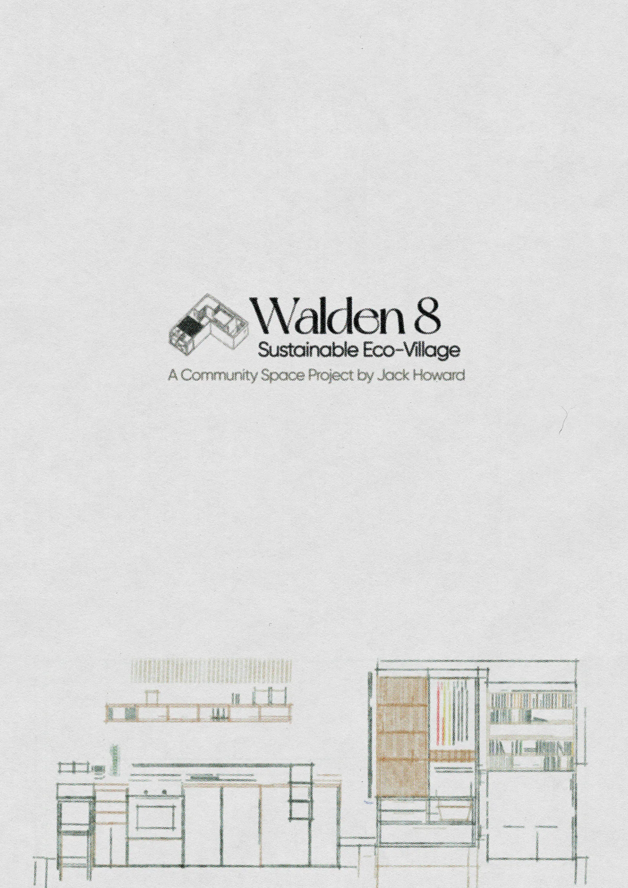
The dwelling-scale interior study for Walden 8, exploring compact, low-impact homes within the wider shared eco-village proposal. Presented as a set of visualisations and plans.
- Year
- 2022
- Type
- Interior Architecture
- Format
- Concept & visualisation
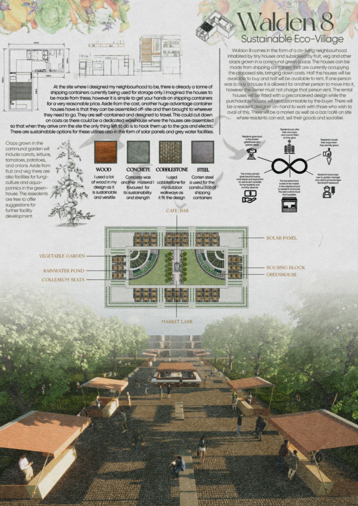
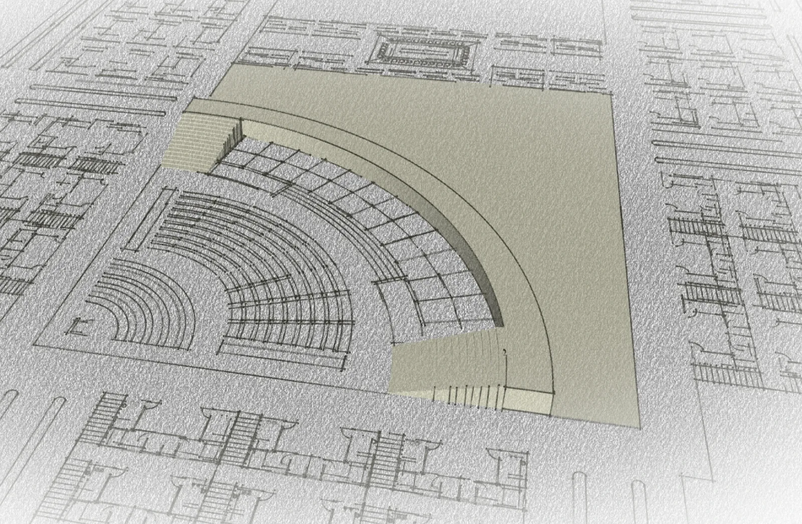
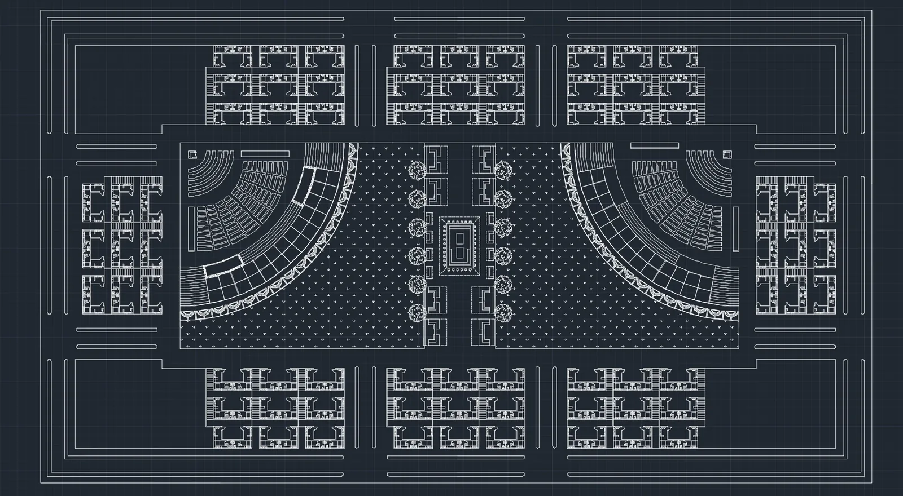
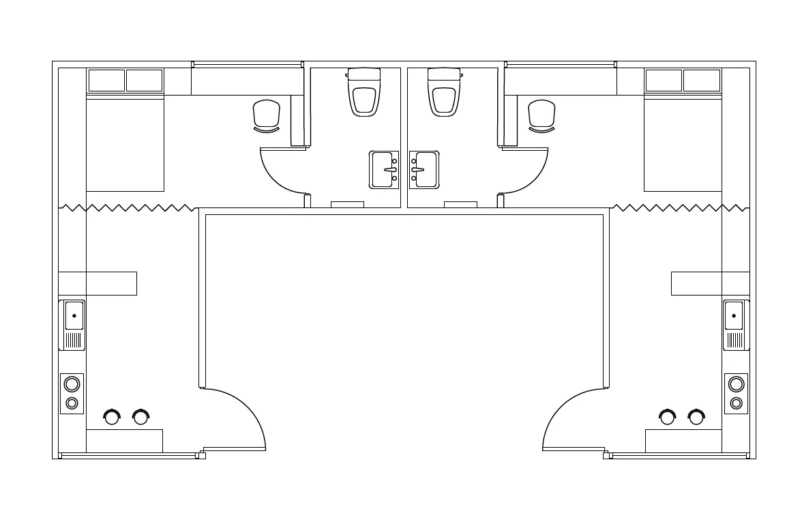
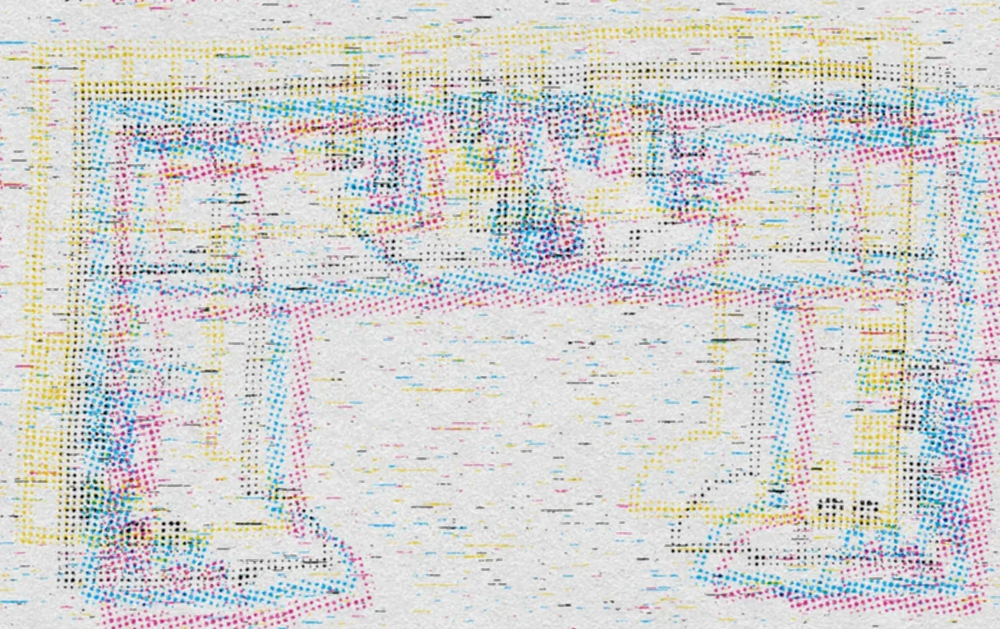
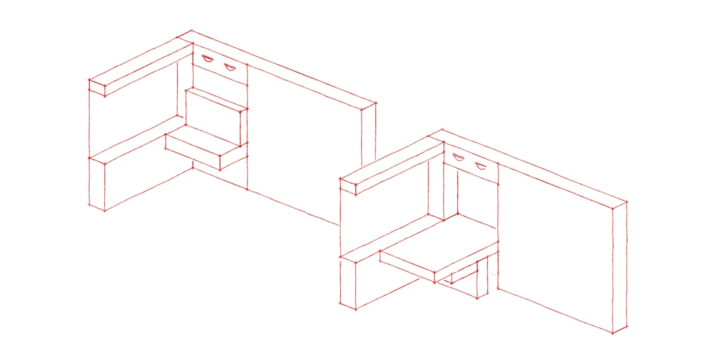
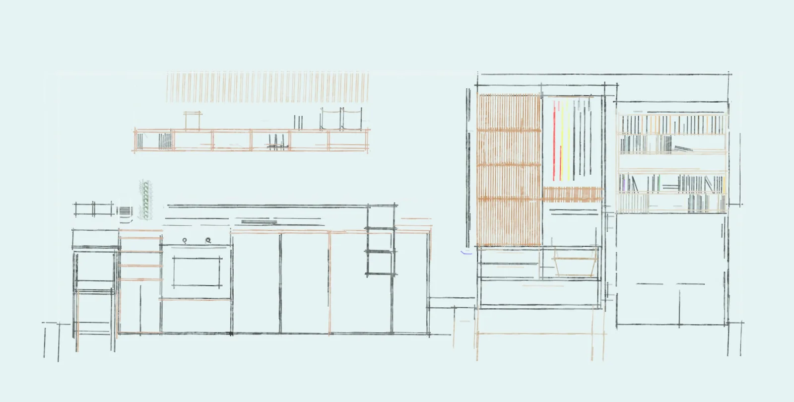
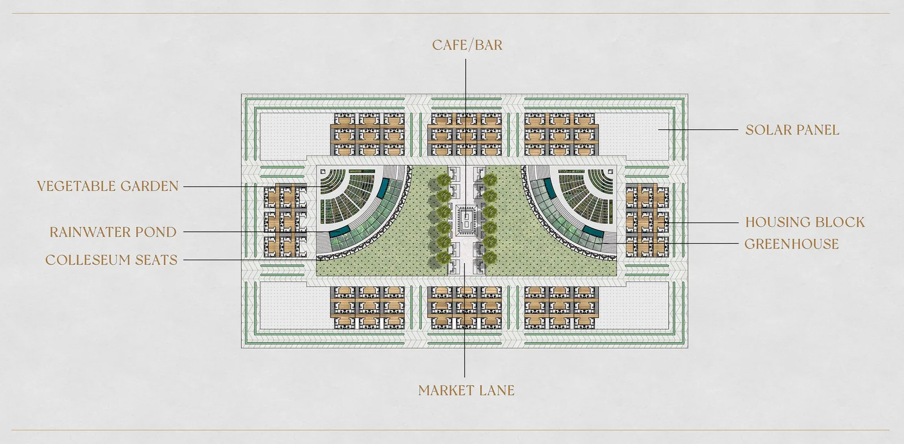
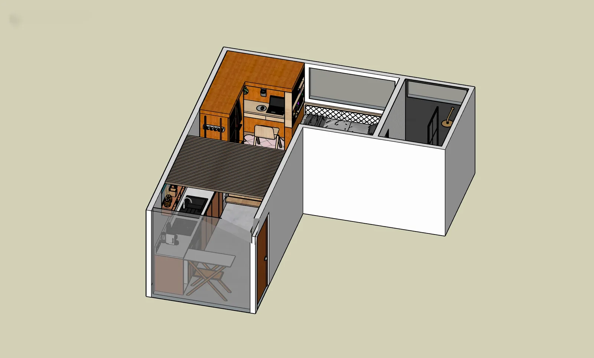
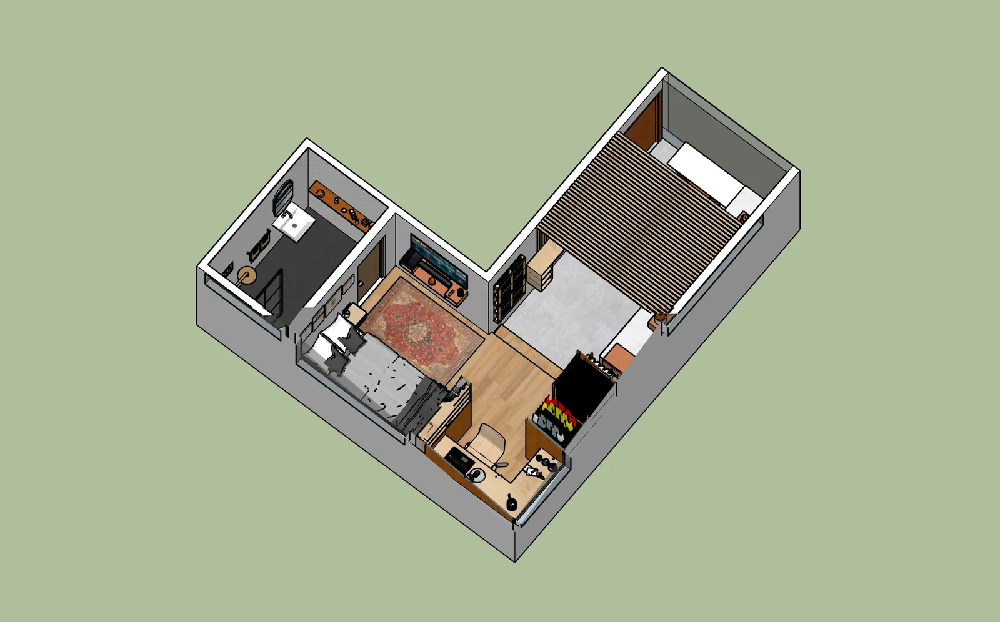
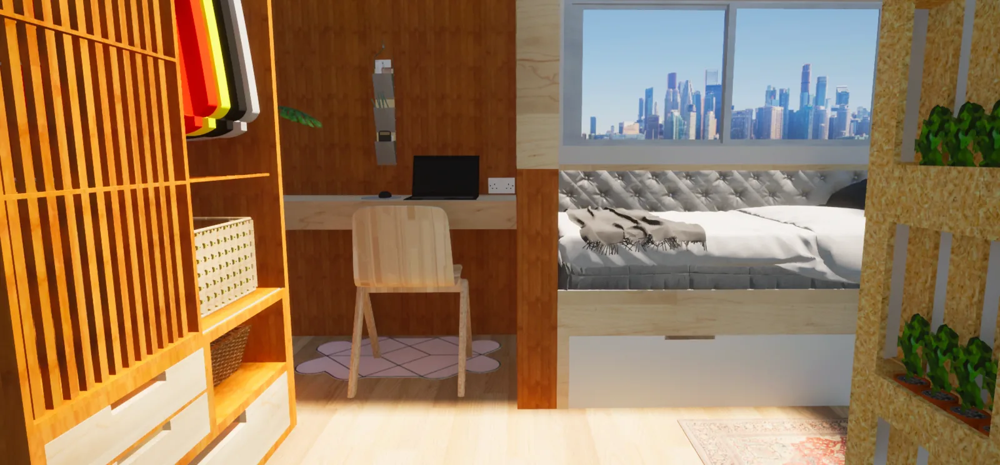
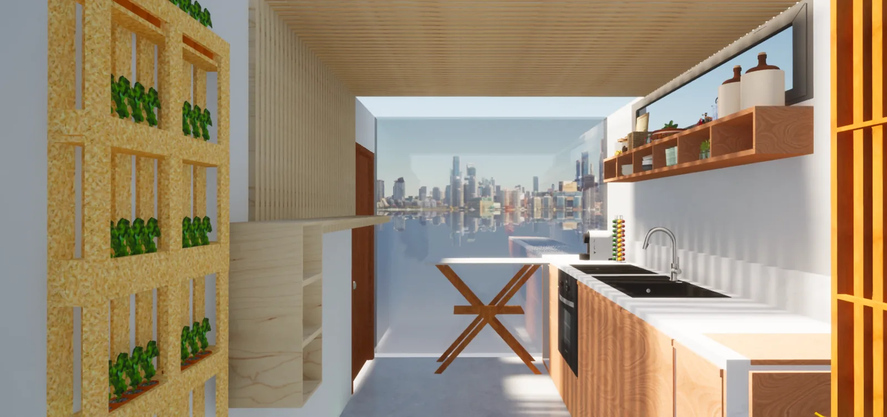
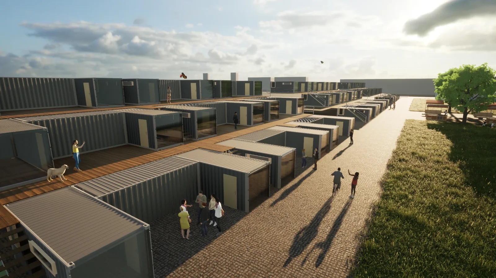
Interested in developing a creative project together?
Explore art + collaboration